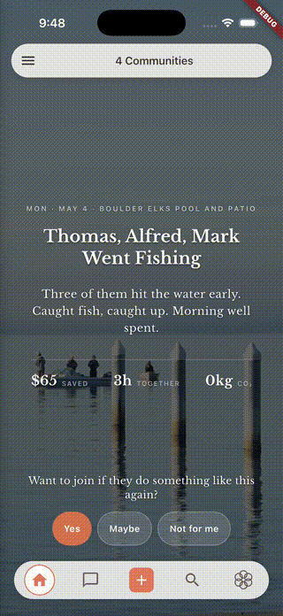

Take your weekends back.
The group trips, the house projects, the standing weekly rides — they can only happen if someone volunteers to run the show. Ripls shrinks that job to nothing.
Get on the list→ An app for the crew, the garage, the trailThe group trips, the house projects, the standing weekly rides — they can only happen if someone volunteers to run the show. Ripls shrinks that job to nothing.
Get on the list→ An app for the crew, the garage, the trailEvery guy carries a list: the camping trip you keep talking about, the fence that's been leaning for two years, the poker night that hasn't happened since fall. For any of it to actually happen, somebody has to send the texts, pick the date, and chase the maybes — and that somebody is usually nobody.
So the ideas stay ideas, the projects don't get done, and your weekends fill up with errands instead of the things you actually wanted to do.
Type "backcountry tour, Berthoud Pass, 5am, two cars" and out comes a real invite — trailhead, time, gear list, and ride coordination all filled in. Drop in an onX or CalTopo link and the route pulls through too.
One tap sends it to the crew. From there the app tracks who's in, nudges the stragglers, and keeps the chat on topic for the last-minute changes.
List what's needed — the chop saw, the post-hole digger, the tow strap, a 4WD, ice and beer — and the crew steps up with what they've got. Whether it's a backcountry tour, a Saturday fence build, or a poker night that needs chips and a folding table, nobody spends the evening in a six-message group chat working out who's bringing the impact driver. The list fills in as people claim things, and everybody can see it.
Who's in, who's out, and who's still deciding — all in one place. Anyone who hasn't replied gets a soft second nudge without you lifting a finger, and a day-before reminder goes out so nobody bails because they forgot.

One tap to ask, one tap to offer — the chop saw, the truck, the pressure washer, the spare ski setup, the roof box, the come-along. Most of what you own sits unused ninety percent of its life, and in a crew that trusts each other, all of it gets to move.
The drill that lived in your basement starts keeping four kitchens together, and the truck that hauls your dirt bike hauls everyone's. Nobody buys what someone else already has.
A short recap of who came and who brought what goes out the next day, and one more tap makes it a regular thing — the Saturday ride, the Sunday workout, the monthly project day. You approve it; you don't plan it again from scratch.
And when you've been the one organizing for three months straight, the system finds the next person up and sends a one-tap "want to set up the next one?" Somebody steps up, and nobody has to remember to ask.

Anybody can pull off one weekend. The work is keeping the thing alive — the Saturday rides, the basketball game running six years in, the shared projects that quietly add up to thousands saved and friendships that hold.
That's how friendships actually endure. You wake up at fifty-five with a stack of stories, still having beers with the people you wrote them with.
Honestly didn't realize how much I was carrying til it stopped. Did 4 rides and a fence build this fall (would've been zero). First fall in years nobody burned out, me included.
— Kevin H., Salt Lake City
We're starting with crews already trying to keep something alive — a riding group, a poker night, a garage project, a Saturday lift, a band that's never quite practicing. We hand-pick the first ones each week.
You're on the list! We hand-pick the first crews each week, so we'll be in touch soon.